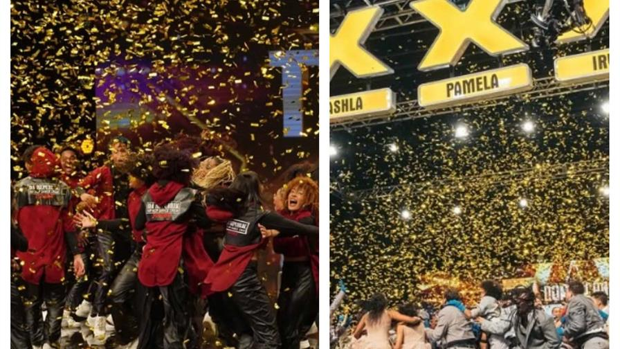

Dos Golden Buzzer y más de 420 mil espectadores en vivo marcan una noche histórica en DGT.
23 de octubre, 2025

El talento y la emoción se adueñaron del escenario en el segundo episodio de Dominicana’s Got Talent.
La segunda emisión de Dominicana’s Got Talent (DGT) se convirtió en un verdadero espectáculo de emociones, talento y récords. En una gala marcada por el baile, el programa entregó por primera vez dos Golden Buzzer, mientras que la transmisión en vivo alcanzó cifras impresionantes: más de 420 mil personas conectadas simultáneamente en el canal de YouTube oficial, sin contar las miles que siguieron el show a través de las redes sociales y de la página web de Color Visión, canal que transmite el programa.
El ritmo, la energía y la pasión por la danza se apoderaron del escenario. Las agrupaciones Da Republik Jr. y Royalty Dance Crew conquistaron al jurado y al público con sus potentes coreografías, precisión escénica y una entrega total que les valió el pase directo a la semifinal.